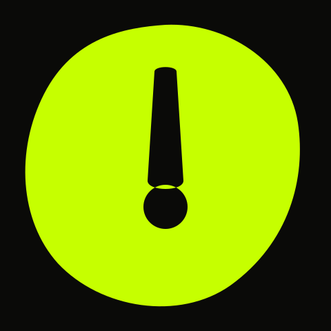
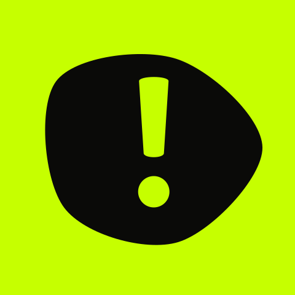

Design System de produto — v4 · derivado de arena.html
Auê! Design System Showcase
Arrote. Receba a nota. Humilhe seus amigos. Jogo mobile casual. A experiência principal é uma única Arena com estados de jogo — não um conjunto de telas, não um app social, não um webapp com navegação. arena.html + system/DESIGN.md são as únicas referências canônicas de UX/UI; qualquer artefato que os contradiga é resíduo.
Tema escuro canônico · sem gradiente · sem glow
Foundations
01
Paleta de tokens semânticos. Fundo escuro é o tema canônico — não existe variante clara nesta rodada.
Tipografia: Display (Anton) para Score, títulos e a fala do juiz. Interface (Archivo) para tudo o mais — grotesca esportiva, ombro reto; Inter permanece só como fallback tardio, nunca como primeira escolha. Mono tem papel restrito: eyebrow, contador, link, timestamp.
display-2xl / 9691
display-xl / 64MONSTRO
display-lg / 48SEU AUÊ
display-md / 32Renan
body-lg / 20ARROTAR
body-md / 16Isso desanda uma mesa inteira.
caption / 12Seu Auê
mono / 12aue.gg/x1/7F3-K4M
Grid de espaçamento (base 8px)
Raio
sm 12
md 20
lg 24
full
Motion tokens — sempre com significado, nunca decoração pura.
--duration-fast · 160ms
--duration-base · 240ms
--duration-slow · 400ms
--easing-emphasize · pop
Identidade — Bolha Viva
01.5
Símbolo evoluído nesta rodada: bolha orgânica sob pressão com um ! pesado integrado como recorte de negativo — flat, vetorial, sem gradiente, sem glow, sem sombra. É a marca estática; a Bolha Auê animada (abaixo) é um componente à parte.

Padrão
verde sobre carvão

Invertida
carvão sobre verde
Bolha Auê
02
Elemento vivo central — nunca decoração. Geometria: blob orgânico de N pontos de controle deslocados por ruído, fechados em Bézier cúbica. Estouro controla escala e amplitude instantânea, grave controla massa e alonga o eixo vertical, fôlego sustenta o piso da escala, sujeira controla irregularidade (N de 3 a 9). Treze modos, todos com preenchimento derivado por color-mix — nunca cor nova, nunca gradiente. cradle e waiting são os modos-recipiente: escala 1 e amplitude baixa não são estilo, são requisito — a nota mora dentro da Bolha e a ondulação não pode empurrá-la para fora. Ver DESIGN.md §7.
idle
idle — respiração senoidal, período 4s. S = 1 ±0.03, A = 4px, sem input de áudio.
Auê Score
03
Inteiro de 0 a 100, sem casa decimal — 91,4 dá ar de laudo e rouba velocidade de leitura do número grande. A nota vive dentro da Bolha (modo cradle): o corpo do número é escolhido para caber no diâmetro com folga, inclusive em 100. Ocupa 25–40% da atenção no estado de RESULT. Métricas em linha com barra fina, preenchidas em --fg: o verde já foi gasto no score (orçamento do accent, DESIGN.md §2.2).
Seu Auê
91
Caralho, veio forte.
Isso desanda uma mesa inteira.
Grave96
Estouro88
Fôlego86
Sujeira91
Rótulos de rua, não de laudo. Profundidade / Potência / Duração / Textura descrevem o sinal para quem construiu o motor; estes descrevem o arroto para quem arrotou.
Botões
04
Um único primário por estado. Hover, focus e active nunca reduzem contraste — disabled é o único autorizado. Rótulo de botão é contrato e nunca varia: toda a variação de voz acontece na fala, nunca na ação. E a caixa é do CSS, não do texto — o rótulo é escrito em caixa de frase ('Chamar pro X1') e a classe aplica text-transform: uppercase. Rótulo já em maiúsculas no código é bug de origem. O CTA primário da Arena carrega um anel de accent permanente quando é o botão sólido; por isso o foco de teclado se distingue por 3px e offset 5px (DESIGN.md §6).
default
focus
disabled
A Arena — máquina de estados
04.5
A Arena é fullscreen e contínua. Existe uma Arena com 19 estados — não 19 telas e não 19 rotas. A moldura (HUD · palco · reação · ação) é a mesma sempre; muda só o que cada faixa carrega, ligando e desligando camadas empilhadas em grid-area:1/1. Nada é remontado do zero. Escrever "estado de RESULT", nunca "tela de resultado". Em código: um componente Arena com uma máquina de estados, nunca um Router. Ver DESIGN.md §12.
Fluxo solo · caminho crítico ARROTAR → VALIDAR → JULGAR → NOTA
IDLEBolha idle
Esperando. Com X1 pendente, um CTA em contorno aparece acima do primário — continua havendo um só sólido.Arrotar
MIC_PENDINGBolha asking
Permissão pedida dentro da Arena, com voz própria, antes do diálogo do SO. Não navega.
RECORDINGBolha recording
Máximo de 10s. Cronômetro em Display; aos 8s vira --gold — aviso, não erro. O HUD some.Parar
VALIDATINGBolha checking
Veio som? Parece arroto? Checagem curta de três batidas. HUD oculto.
NO_SOUNDBolha flat
Não veio nada. shake antes de qualquer texto — negativa corporal primeiro.Tentar de novo
NOT_A_BURPBolha flat + replay
Veio áudio, não veio arroto. Provocação e replay do que foi mandado — a prova junto com a recusa.
JUDGINGBolha judging
Momento de jogo, não spinner. HUD some, palco escurece, Bolha contrai. Avança sozinho.
RESULT_REVEALBolha cradle
Só a nota, dentro da Bolha. Score contando e reação forte. Sem HUD, sem métrica, sem replay, sem origem, sem CTA. Automático, ~1,5s.
RESULTBolha cradle
Score segue dominante; replay, métricas e origem entram em cascata. A origem nunca bloqueia o caminho até a nota.Chamar pro X1Jogar no grupo
Fluxo X1 — mesmo palco, mesmo sistema visual
CHALLENGE_CREATEDBolha cradle
O desafio existe e o link está disponível. Ainda não há adversário — e por isso não há nome nenhum na tela.Mandar pro infeliz
WAITING_OPPONENTBolha waiting
"Ninguém aceitou ainda." Cutucar de novo, ouvir o próprio arroto e sair sem perder o desafio.
INCOMINGBolha holding
O amigo abriu o link. Nome e nota do provocador vieram dentro do link. Replay + provocação em --gold. Não passa pela home.Aceitar o X1
SCOREBOARDVS + placar tocável
Comparação. Vencedor em --gold; perdedor mantém --fg — derrota não é erro.Revanche
DRAWmarca “=”
Empate não é vitória de ninguém: os dois em --fg e a marca central vira =. A simetria é a informação.Revanche
REMATCHcontagem 3·2·1
Reinício ritualizado entre os mesmos dois. HUD oculto. Vai direto para RECORDING.
Resiliência — erro e recuperação acontecem dentro da Arena
MIC_ERRORBolha error
Permissão negada. Instrução concreta de como liberar, sem culpar o jogador.
SHARE_ERRORBolha cradle
Falha de envio/upload não apaga o resultado conquistado: o score continua na tela, o link continua copiável e há retentativa.
CHALLENGE_EXPIREDBolha dead
Desafio vencido. Saída honesta: arrotar mesmo assim.
SESSION_RECOVERYBolha cradle
Reabriu ou recarregou com X1 aberto → volta ao estado correto da partida, com a nota intacta.
Regras da máquina. Toda transição limpa tudo e cada estado liga só o que usa — nada de resíduo em faixas, timers, overlays ou áudio. Overlays (menu, compartilhar, assinatura) são camadas, não estados. Um botão fantasma que promete ação imediata entrega ação imediata: OUTRA vai direto para RECORDING, não volta para IDLE. Não existe estado de anúncio: se publicidade existir um dia, é integração opcional entre rodadas — nunca parte da máquina de jogo (DESIGN.md §20).
Componentes da Arena
04.6
Pílula de utilidade. Tudo que é ferramenta e não conteúdo — link copiável e player de replay — compartilha uma forma só: 56px, raio total, --surface, borda 1px, sem accent. É essa consistência que impede o app de virar uma colcha de componentes avulsos.
aue.gg/x1/7F3-K4M
Teu arroto4,1s
Pílulas de origem. Quatro pílulas de 44px numa linha, na cascata do RESULT, depois da nota. Um toque resolve, colapsa para uma linha discreta e nunca bloqueia nenhum CTA. Se o jogador ignorar, o jogo segue.
Placar tocável. Cada linha toca o arroto do dono. É aqui que a nota do adversário deixa de ser um número e vira prova. Líder com selo textual além do dourado — nunca só cor.
Assinatura tardia. Não existe cadastro. Enquanto ninguém se nomeia, o placar diz "Você". O nome é cobrado no ato de humilhar — é ali que ele deixa de ser enfeite e vira endereço da provocação. E é retroativo: as linhas de placar já registradas passam a exibi-lo.
Você vai mandar
87
Assina essa merda.
Sem nome, ninguém sabe de quem foi o estrago.
HUD e overlays
05
O HUD não é navegação. São três coisas e só três: wordmark, marca de X1 aberto (quando existe) e o botão de menu. 56px de altura fixa. Ele desaparece durante a partida — em RECORDING, VALIDATING, JUDGING, RESULT_REVEAL e REMATCH nada compete com o momento. Não existe bottom navigation, tab bar, drawer nem destino paralelo. Menus ficam fora do fluxo principal, como overlay.
HUD visível — estados de descanso
Auê!X1 aberto
HUD oculto — durante a partida
Auê!X1 aberto
Overlays são camadas sobre a Arena, não estados. Não trocam data-state, não entram no histórico e não interrompem a partida. Fundo em scrim de --bg a 94% com blur(2px), superfície --surface em raio 24, role="dialog", foco inicial no primeiro controle e Esc para fechar. A assinatura precisa poder pintar por cima do compartilhar.
X1, placar e revanche são o mesmo sistema visual do resto da Arena — mesma grade, mesma Bolha, mesmos botões. Não são um módulo à parte. Vitória em --gold; o perdedor mantém --fg. Derrota nunca usa --danger — é humor, não erro. E o nome nunca é inventado pelo jogo: quem cria assina antes de mandar, quem aceita assina antes de publicar.
Vitória — vencedor evidente sem legenda
Luiz
87
VS
Renan
91
Empate — não é vitória de ninguém
Luiz
88
=
Renan
88
A comparação usa a nota arredondada — a mesma que está na tela. Se os dois exibem 88, é DRAW. Vencedor invisível por diferença decimal é bug.
Compartilhamento
07
Dois formatos, mesma nota e mesma reação que o jogador acabou de ler no resultado — sortear outra faz o produto soar como duas pessoas diferentes. O card 4:5 é a peça que a pessoa posta; o banner é a peça que ela manda. Nenhum dos dois reproduz áudio, em nenhuma hipótese: o preview nunca arrota na timeline de ninguém. Orçamento do accent no banner: exatamente duas aparições — o score e a pílula.
Card 4:5 · story
Auê!
LUIZ FEZ
91
Monstro do Esgoto
VOCÊ CONSEGUE FAZER MELHOR?
Banner 1200×630 · preview de link (WhatsApp, X, og:image)
Auê!aue.app/x1/9K2F
Luiz mandou
91
Monstro do Esgoto
SUA VEZ.
Passa de 91 ou fica quieto pro resto do grupo.
ENTRAR NO X1
Banner 1200×300 · faixa curta, mesma estrutura sem reação e sem subtexto
Auê!aue.app/x1/9K2F
Luiz mandou
91
SUA VEZ.
ENTRAR NO X1
Erros e recuperação
08
Todo erro é um estado da Arena, com o mesmo palco, a mesma Bolha e a mesma faixa de ação — nunca uma página, nunca um modal de sistema como primeira impressão. --danger só aparece em falha técnica real: derrota, empate e nota baixa nunca usam vermelho. E SHARE_ERROR tem uma regra inegociável: falha de envio não apaga o resultado conquistado — o score continua na tela, o link continua copiável e há retentativa.
PRECISO OUVIR ESSA PORRA.
O Auê! usa o microfone para analisar seu arroto.
PREPARANDO O JULGAMENTO...
Loading contextual usa a Bolha em judging, nunca spinner tradicional. ~1700ms de suspense; 600ms com prefers-reduced-motion.
CADÊ O ARROTO?
Tenta de novo e chega um pouco mais perto.
A internet morreu. Seu arroto continua funcionando — o resultado será sincronizado depois.
Motion
09
Motion transmite estado e feedback. Nunca é decoração. Se um movimento não diz o que está acontecendo, ele sai. Nunca gradiente, nunca glow: a vivacidade vem de cor sólida + forma + timing.
MomentoMovimentoDuraçãoO que comunica
Entrada na gravaçãoring — anel de accent expandindo do centro720msA partida começou. É o disparo, não uma transição
Bolha reagindo ao áudioamplitude e drive pelo envelope de energiacontínuo · 60fpsA Bolha é o VU meter — o jogador vê o próprio arroto
Fim da gravaçãosnap — esmaga a .8 e volta por 1.08460msO corpo leva o baque antes de segurar o ar
Validaçãotick — três batidas curtas de escala900msAlguém conferindo, não carregando
Julgamentocontração lenta + palco escurece + HUD some~1700msSuspense. É o loading do jogo, e é jogo
Revelação da notapop do score + contagem em easeOutCubic560ms + 900msO número é o payoff. Nada mais se move
VitóriawinPop — entra de .6 → 1.14 → 1 em --gold620msVencedor evidente sem legenda
DerrotaloseSag — cai de −10px com opacidade baixa520msPerder tem peso, sem virar erro
EmpatedrawL/drawR — os dois entram um contra o outro520msNinguém ganhou — simetria é a informação
Desafio recebidoenter da provocação + replay do host240ms + replayO X1 chegou com prova junto
Resposta do adversárioflash do palco inteiro antes de trocar de estado620msO evento chegou agora — não estava lá antes
Revanchecontagem 3·2·1, cada número de 1.7 → 1 → some620ms cadaReinício ritualizado, mesmos dois
Recusashake horizontal da Bolha ±7px340msNegativa corporal, antes de qualquer texto
Cascata do RESULT: score → fala → comentário (+120ms) → replay → métricas (~780ms após o score) → origem. Mostrar tudo de uma vez mata o payoff — a ordem é requisito, não estilo. Da segunda revanche em diante o número aparece direto: teatro repetido vira atraso. prefers-reduced-motion neutraliza duração mantendo a informação completa — o score aparece direto, a barra de replay anda em passos, a Bolha para de ondular, flash e shake não disparam.
clique para simular
0
Do / Don't
10
Fazer
Uma Arena fullscreen e contínua, com estados — nunca rotas
Um elemento visual dominante por estado
Bolha como elemento vivo central, dirigida por áudio
A nota dentro da Bolha, inteira de 0 a 100
RESULT_REVEAL só com a nota; o resto entra em cascata
Métricas em linha, barra fina, preenchida em --fg
Rótulo de botão é contrato — só a fala varia
Erro e recuperação dentro da Arena, como estado
Motion que comunica estado; escuro como tema canônico
Evitar
Rota, página ou tela para um estado de jogo
Chamar estado de partida de "tela"
Bottom navigation, tab bar ou qualquer destino paralelo
Card e gramática de app tradicional no gameplay
Bloquear o caminho até a nota com origem ou formulário
Score com casa decimal, ou rótulo de laudo na métrica
Accent no wordmark, na métrica, na pílula ou no player
Vermelho de erro para derrota, empate ou nota baixa
Mais de um CTA primário por estado; motion decorativo